DRAMA
R-rated
X-rated
Filter
|
↑
♬
21 (2008) | Secret Blackjack Club Scene
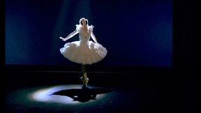
Anna Pavlova (1983) | Ballet Sequence
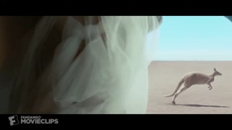
Australia (2008) | We Like to Bunk Up Together
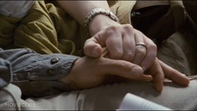
Babel (2006) | Shot in Morocco
Blood Diamond (2006) | Commander Zero
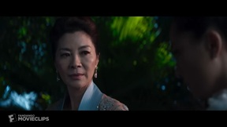
Crazy Rich Asians (2018) | She's Lying Scene
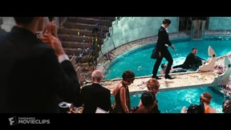
The Great Gatsby (2013) | The Mysterious Mr. Gatsby Scene
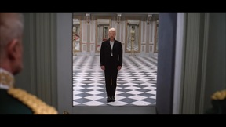
Hamlet (1996) | To be or not to be
It's All Gone Pete Tong (2004) | Frankie Wilde making music deaf
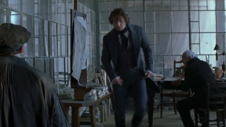
Les Misérables (1998) | Valjean is preoccupied with the arrival of Inspector Javert
Lorenzo's Oil (1992) | Breaking Bad News
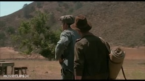
Of Mice and Men (1992) | Lennie's Dead Mouse
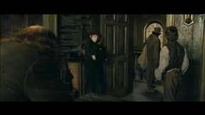
Oliver Twist (2005) | a scuffle breaks out
Romeo + Juliet (1996) | The Mysterious Mr. Gatsby Scene
Their Eyes Were Watching God (2005) | Give Me Yourself
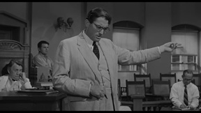
To Kill a Mockingbird (1962) | Atticus Finch's Closing Argument
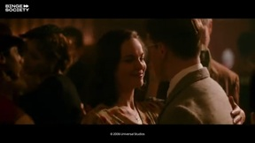
The Good Shepherd (2006) | Would you like to dance?
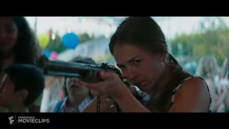
A Dog's Purpose (2017) | Doggie Matchmaker Scene
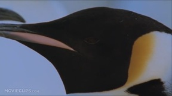
March of the Penguins (2005) | Protecting the Egg
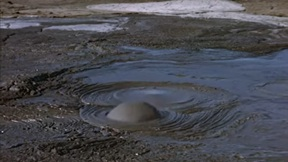
The Living Desert (1953)
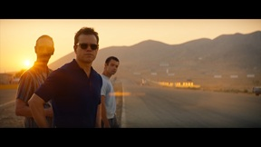
Ford vs Ferrari (2019) | Making the car faster
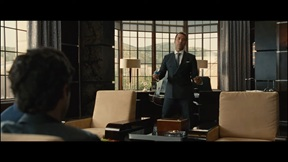
Entourage (2004) | What Is He Doing Here (S03E15)
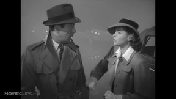
Casablanca (1942) | He's Looking At You, Kid
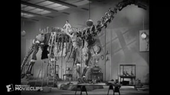
Bringing Up Baby (1938) | The Dinosaur Falls
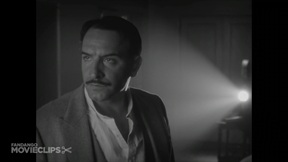
The Artist (2011) | Up in Flames
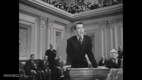
Mr. Smith Goes to Washington (1939) | I Will Not Yield!
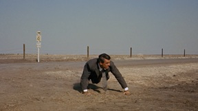
North by Northwest (1959) | A Crop Duster Attacks Roger in the Middle of Nowhere
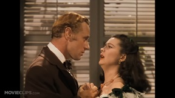
Gone with the Wind (1939) | Scarlett Meets Rhett
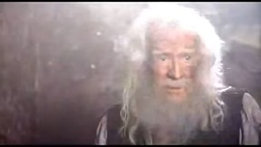
The Count of Monte Cristo (2002) | Abbe Faria
Play